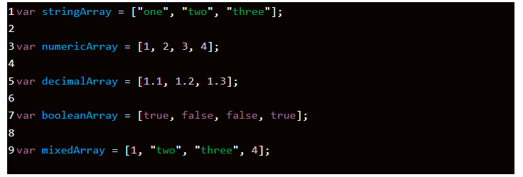

Mảng là 1 kiểu dữ liệu thuộc kiểu tham chiếu (reference type) dùng để lưu trữ nhiều values (giá trị) trong 1 biến duy nhất.
Array trong JavaScript cũng là một loại object. Nhưng array khác object bình thường ở chỗ là:
length --- Là thuộc tính đưa ra độ dài của mảng. Nếu bạn dùng một số nguyên âm, số thực hoặc một chuỗi làm chỉ mục thì độ dài của mảng cũng là một số nguyên dương cao nhất.
Thuộc tính length được tự động cập nhật mỗi khi bạn thêm/xóa phần tử trong mảng.
Giá trị của length bằng chỉ số lớn nhất trong mảng cộng thêm 1 đơn vị, ví dụ:
Thuộc tính length là writable. Nghĩa là bạn có thể thay đổi giá trị của thuộc tính length. Nếu bạn tăng nó lên thì không sao. Nhưng ngược lại, nếu bạn giảm giá trị của length thì mảng sẽ bị cắt ngắn đi: let letters = ["a", "b", "c"];
Sử dụng push để thêm một phần tử vào cuối mảng
Sử dụng unshift để thêm phần tử vào đầu mảng
Sủ dụng pop để xóa một phần tử ở cuối mảng
Sử dụng shift để xóa phần tử đầu mảng
Ngoài ra còn có thể dùng delete để xóa phần tử, nhưng hàm delete để lại một lỗ trống trong mảng
Hàm splice vừa có thể thêm vừa có thể sửa và xóa được các phần tử trong mảng
Sử dụng hàm keys() để trả về các keys của mảng.
Sử dụng hàm entries() để trả về cả keys và value của mảng
Sử dụng forEach() để duyệt qua từng phần tử của mảng
concat() dùng để nối 2 hay nhiều mảng với nhau
filter() dùng để lọc ra các phần tử trong mảng thoả mãn một điều kiện nào đó
find() cũng dùng để lọc phần tử trong mảng, tuy nhiên nó sẽ trả về giá trị ĐẦU TIÊN tìm thấy ở trong mảng hoặc có thể trả về undefined nếu không tìm thấy
includes() kiểm tra xem phần tử đã cho có tồn tại trong mảng hay không
indexOf() dùng để tìm kiếm vị trí của phần tử trong mảng
join() dùng để tạo ra một chuỗi mới bằng cách nối tất cả các phần tử của mảng, mặc định ngăn cách chúng bởi dấu phẩy hoặc một chuỗi ký tự xác định.
map() giúp tạo ra một mảng mới với các phần tử là kết quả từ việc thực thi một hàm lên TỪNG PHẦN TỬ của mảng ban đầu
Là hàm(function) được truyền qua đối số khi gọi một hàm khác